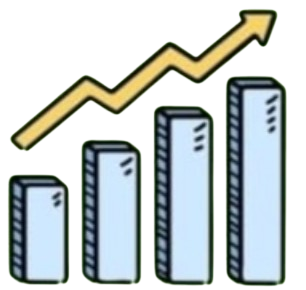
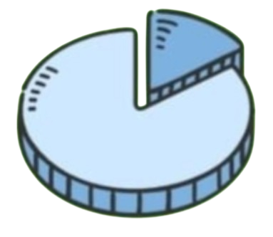

La economía es la ciencia que estudia cómo se administran y utilizan los recursos escasos para satisfacer necesidades humanas, analizando las decisiones de individuos, empresas y gobiernos.

El origen de la economía se encuentra en la antigüedad, cuando las comunidades comenzaron a intercambiar bienes y organizar el trabajo humano para satisfacer sus necesidades.
La economía permite mejorar la producción, distribución y consumo eficiente de bienes y servicios, logrando decisiones más acertadas.

Las ramas de la economía son la microeconomía , que estudia las decisiones de individuos y empresas, y la macroeconomía, que analiza fenómenos globales como el empleo, la inflación y el crecimiento económico.
La economía enfrenta desafíos como la inflación, el desempleo, la desigualdad económica y el impacto del cambio climático, los cuales afectan el bienestar social y el desarrollo.
La economía ha avanzado gracias a la globalización, la tecnología y la digitalización, que han mejorado el comercio, la productividad y el acceso a nuevos servicios.